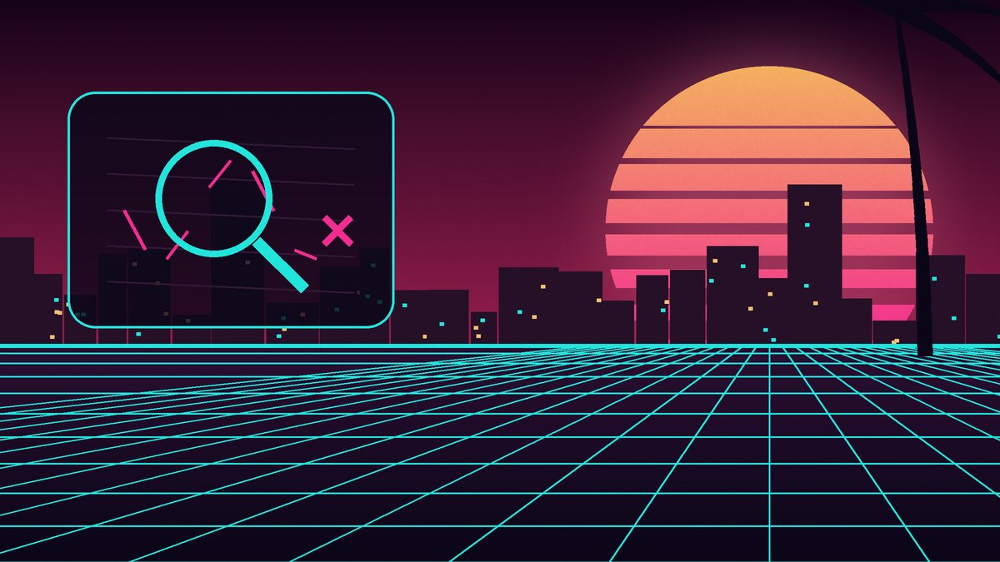

El sombrero que los jugadores dan por el de Arthur Morgan está en un mercadillo de Port Gellhorn
En un mercadillo del sur de Port Gellhorn hay un sombrero de vaquero a la venta que los jugadores han reconocido como el de Arthur Morgan, el protagonista de Red Dead Redemption 2. El juego no lo dice en ningún sitio: lo delata el cordón atado con el mismo nudo.
Por Redacción Golpe Diario · Publicado el

Qué ha pasado
En el juego el objeto se llama Genuine Cowboy Hat y está en uno de esos mercadillos caseros de sacar los trastos al jardín, en el sur de Port Gellhorn. TheGamer lo sitúa en Orchard Avenue y da la pista más clara para encontrarlo: un montón de globos atados en la entrada de una casa.
Una vez dentro del jardín hay que mirar el sofá blanco pegado a la pared de la casa. El sombrero descansa encima de una funda de guitarra y se puede coger de ahí. GamesHorizon describe el mismo rincón y lo coloca al lado de la tienda de Moses, que ya conoces del capítulo 2.
Con el precio conviene ir con cuidado, porque las guías no se ponen de acuerdo. Gfinity Esports, GamesHorizon y XboxPlay dan 35 $, mientras que TheGamer habla de 5 $. En cualquiera de los dos casos es calderilla, pero el número que manda es el que te salga en pantalla.
El mercadillo aparece en el capítulo 2. Gfinity Esports avisa de que, si lo compras al principio del capítulo, solo podrás ponértelo con Lucia hasta que el juego te deje cambiar de personaje, más o menos a mitad. Las capturas de TheGamer, en cambio, son de Jason comprándolo y llevándolo puesto. XboxPlay va más lejos y asegura que solo se consigue con Lucia, algo que las otras guías no recogen.
La prueba de que es el sombrero de Arthur está en el cordón: GamesHorizon señala que los dos llevan la cuerda atada con el mismo nudo y en el mismo sitio. La ficha del objeto no menciona a Arthur Morgan en ningún momento y quien lo vende suelta que no tiene ni idea de dónde ha salido. Rockstar no ha confirmado nada, así que la identificación es cosa de los jugadores.
No es el único guiño al Oeste. TheGamer ha encontrado en la marina de Brian un libro sobre el forajido Flaco Hernández que lo deja muerto en la nieve en Cairn Lake, justo donde lo mata Arthur en Red Dead Redemption 2, y que además nombra Blackwater, New Austin, Armadillo, Ambarino y Chuparosa. Por las carreteras de Leonida también se ven coches con matrícula de New Austin.
Qué significa para ti
- Llévate dinero suelto y fíjate en el precio que sale en pantalla antes de comprarlo.
- Guíate por los globos de la entrada: son la señal más visible del mercadillo.
- Si lo compras al principio del capítulo 2, puede que de momento solo te lo deje poner un personaje.
- Es solo ropa: no cambia nada de tu partida, es puro guiño para quien jugó a Red Dead Redemption 2.
Lo tienes también en la guía: Secretos y easter eggs de GTA 6: dónde están y cómo llegar
Contrastado con: Gfinity Esports · TheGamer · GamesHorizon · XboxPlay · TheGamer
Sigue leyendo
El Joker de Florida amenazó con demandar a Rockstar, y ahora está en los créditos de GTA 6
Lawrence Sullivan, el internauta viral por su ficha policial de 2017, llegó a pedir 10 millones de dólares a Rockstar por un plano del tráiler. Hoy aparece acreditado como voz de la población de Leonida, y los mismos créditos nombran también a los empleados que la compañía despidió.
Tenebrae Lux: el videojuego dentro de GTA 6 que se ríe de los autores más pretenciosos
Jason tiene en casa una consola ficticia, la JoySystem, y en ella se puede jugar a Tenebrae Lux: un juego de puzles enterito, con sus propios créditos y su propio autor de mentira, pensado para reírse de los creadores de videojuegos que se toman muy en serio a sí mismos.
El santuario de Leonida que homenajea a familiares de la gente de Rockstar
Al norte de Hamlet hay un pequeño memorial que no da ninguna misión ni recompensa: Rockstar ha puesto ahí los nombres de familiares de su propio equipo que murieron mientras se hacía el juego.